My Favorite Things to Do and Hobbies
- Playing Online Games 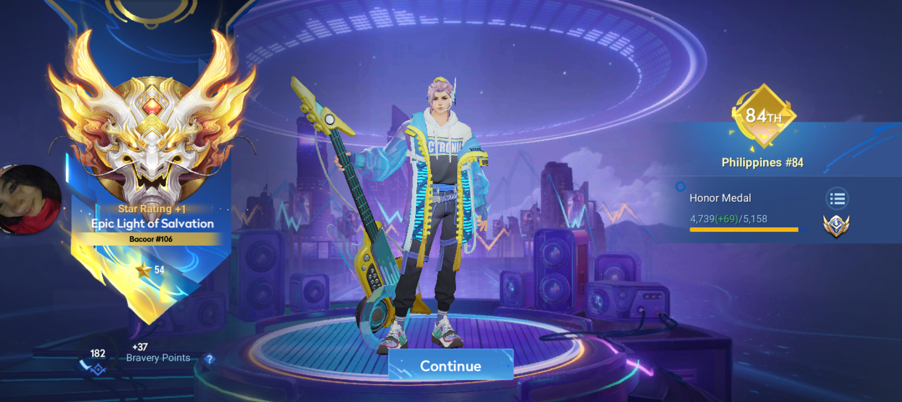 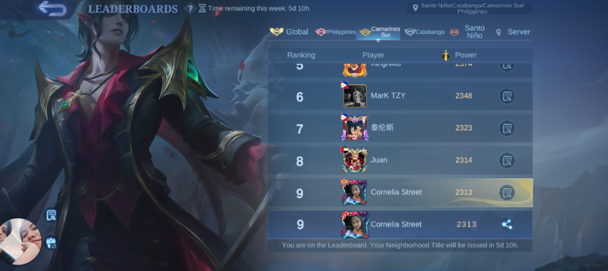 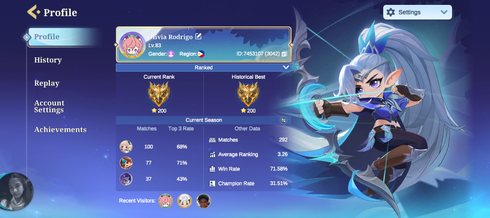
- Basketball 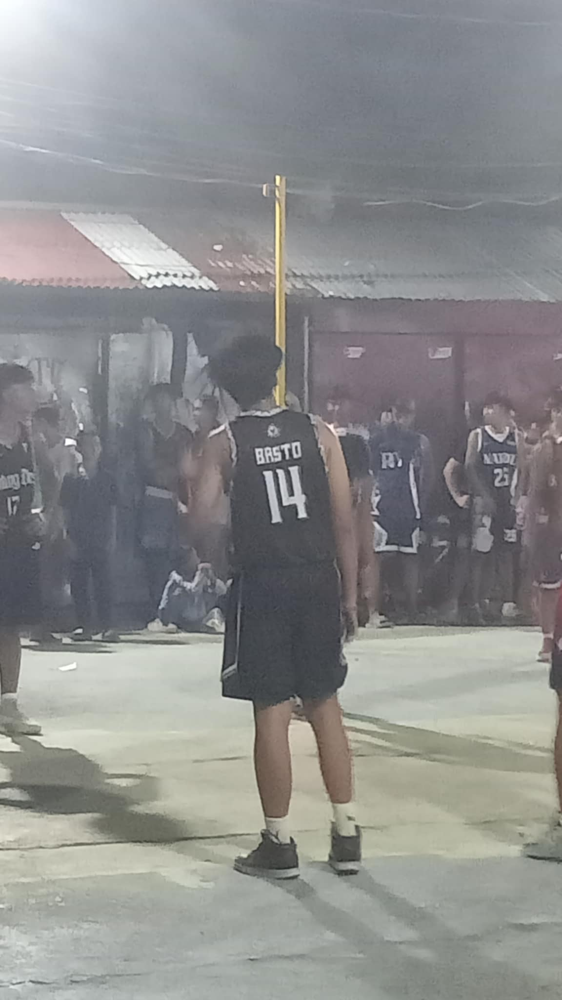 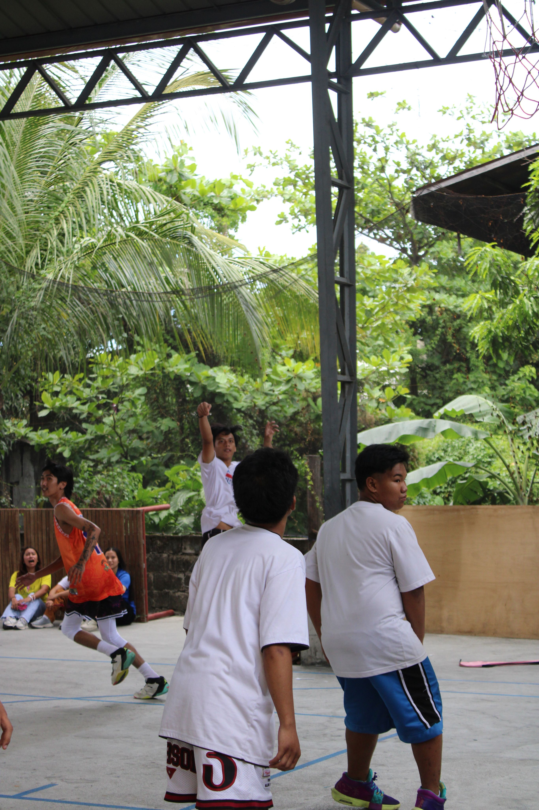 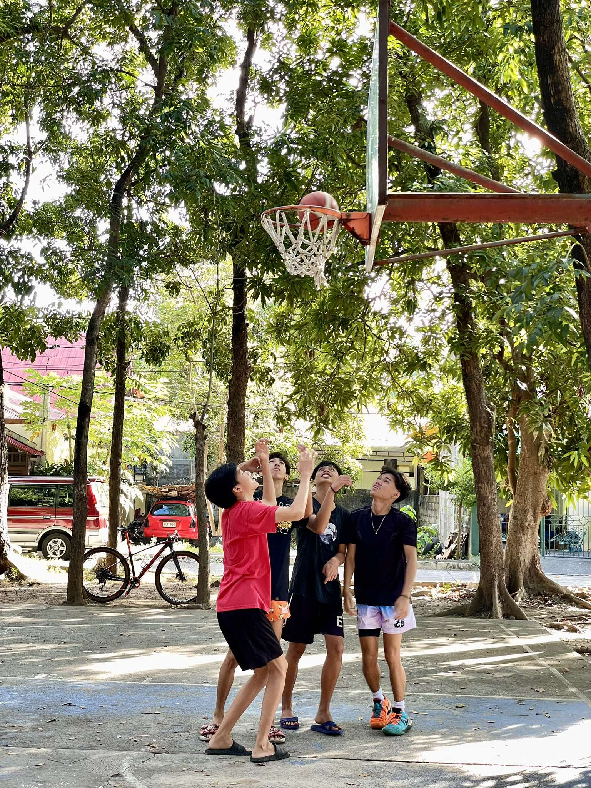
- Exploring (walking or going somewhere else) 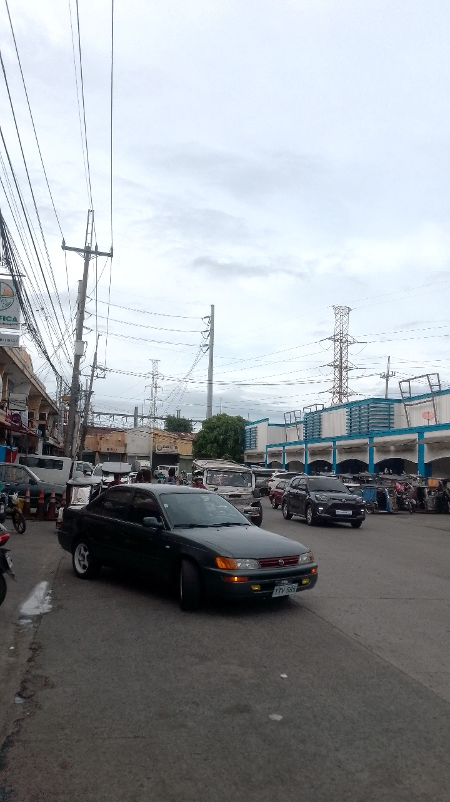 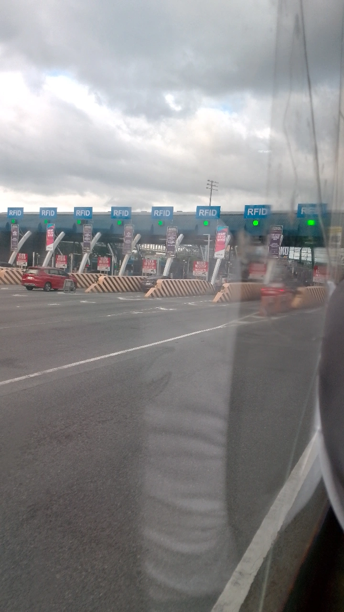 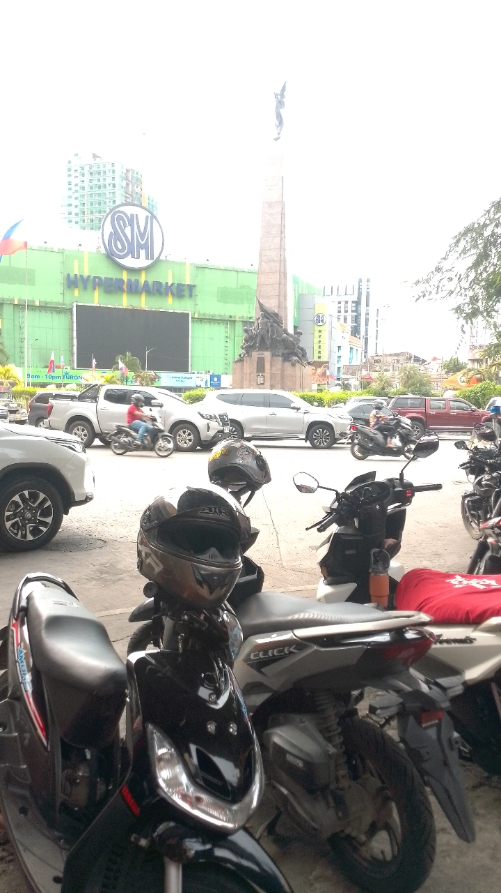 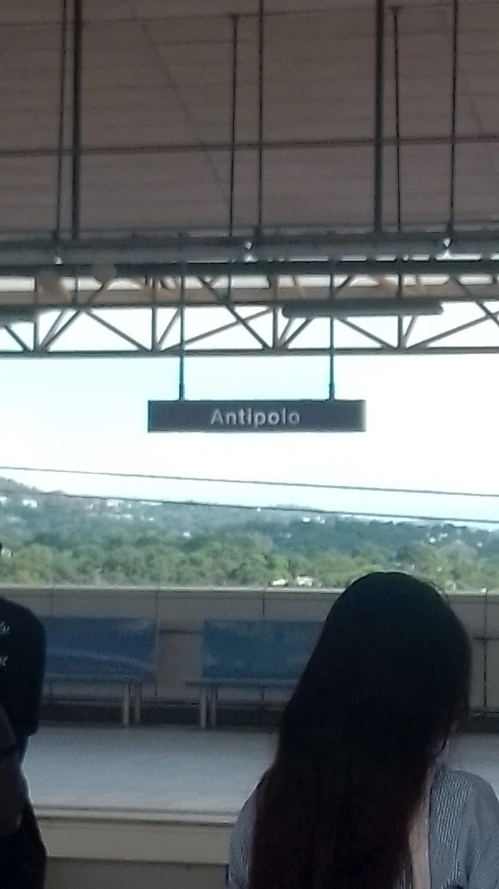 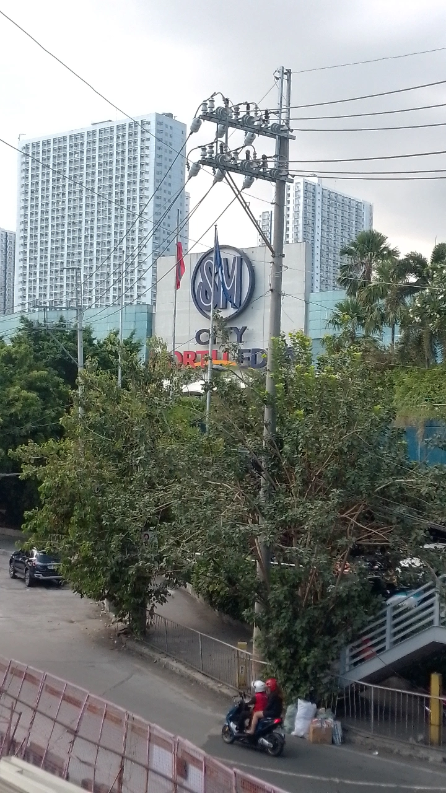
 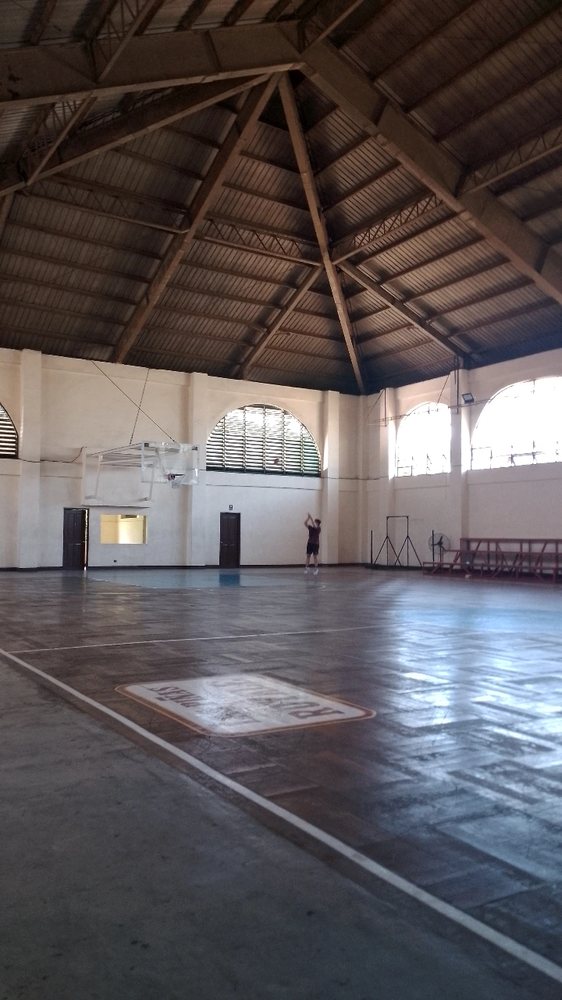
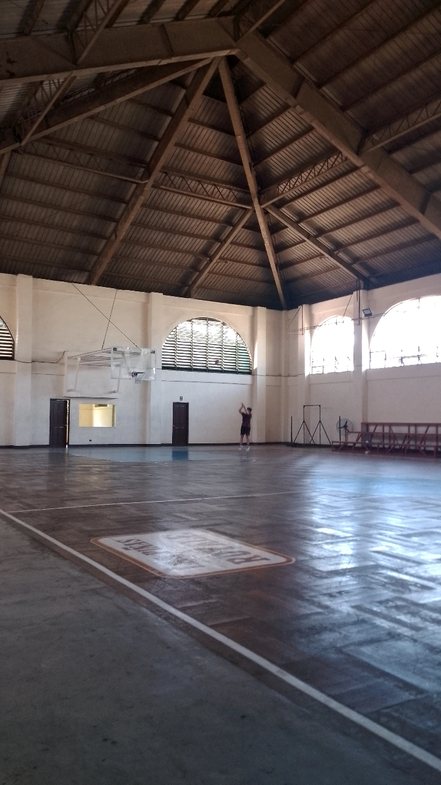
Hi, my name is Van Mikael A. Basto and I'm 18 years old. I was born on September 6, 2007. My family consists of five members, and I'm the eldest among my three siblings.
I'm currently studying BS Computer Science at CVSU-Imus. This was not my first choice, but rather a no-choice scenario. My first choice was BS Aeronautical Engineering, but unfortunately, I was not able to secure a slot.
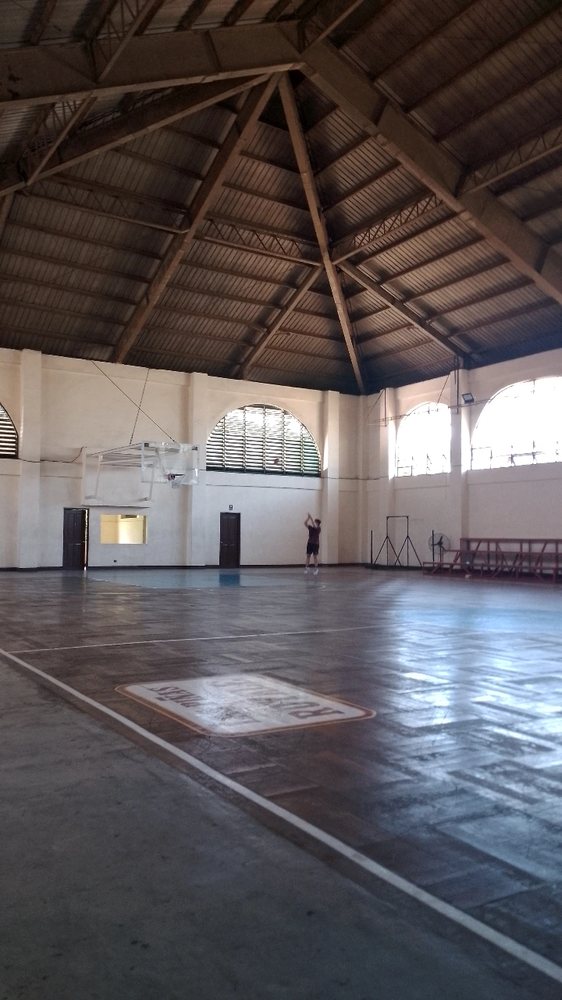
Grade 10: With Honors
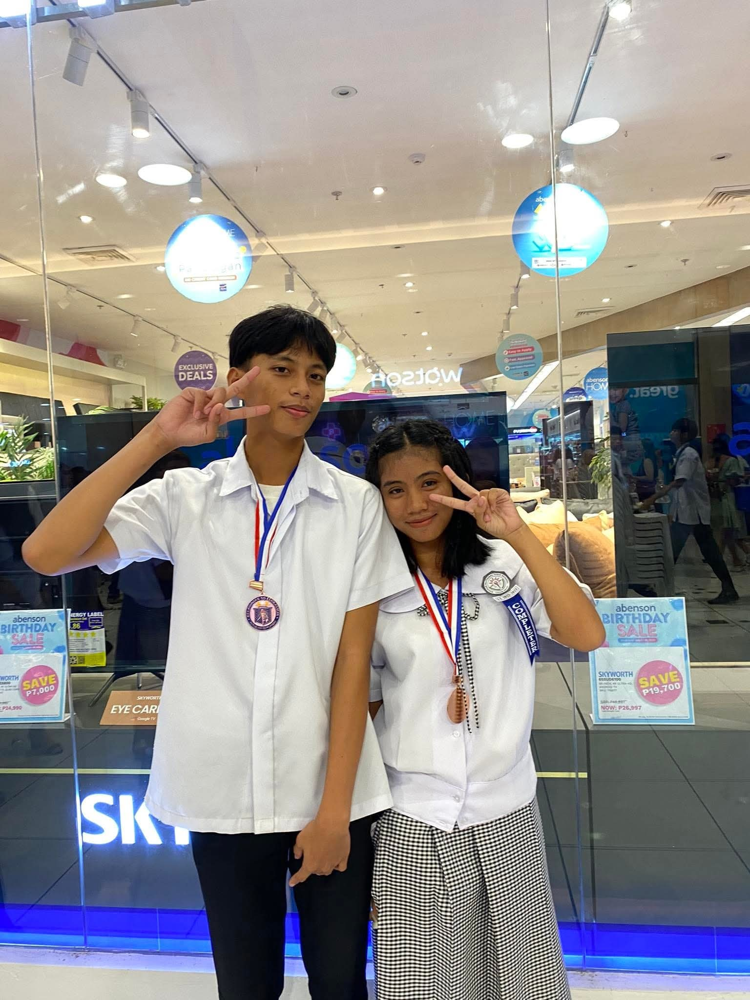Grade 11: With Honors
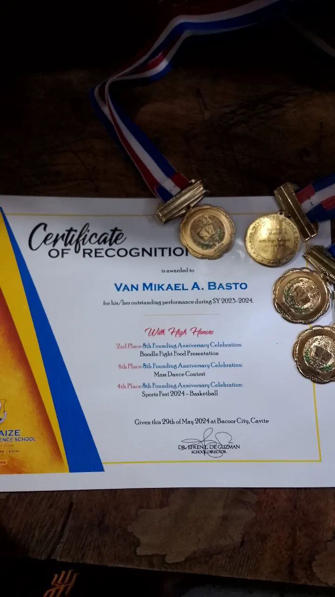 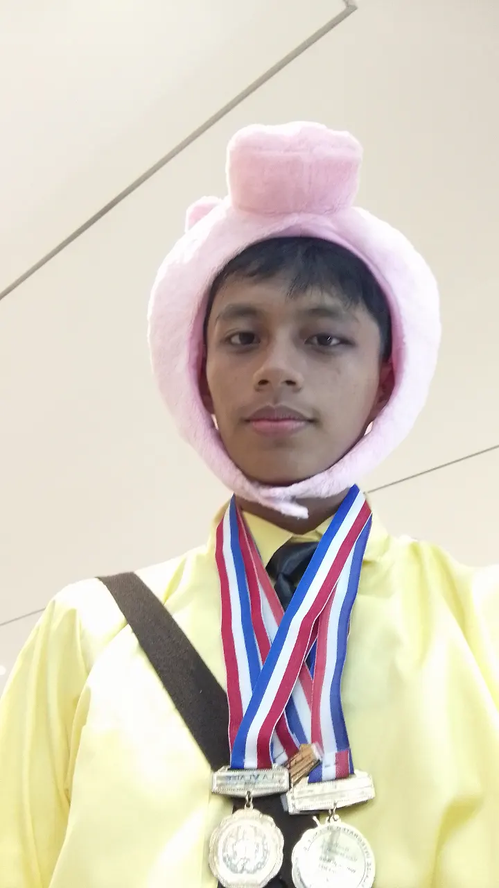Grade 12: With Honors
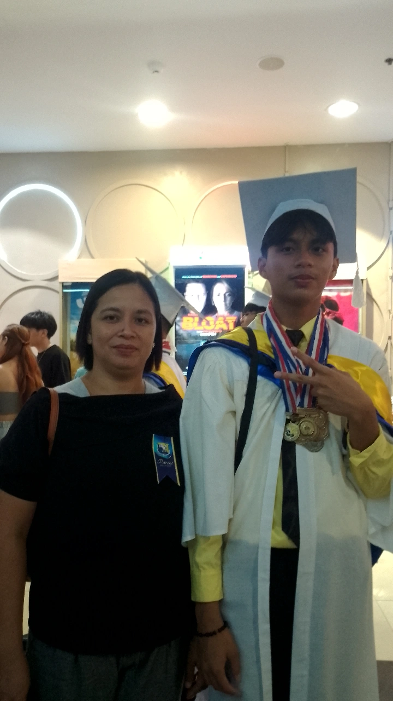